Red-tailed Hawk
Buteo jamaicensis · Lifer #113
Photos: 12
Forms: 3 (borealis, calurus/abieticola, kriderii)
Krider's (kriderii)borealis (borealis)calurus/alascensis (calurus/alascensis)
US-COUS-IAUS-ILUS-VA
14ISSF, 1Form. Variety of RTHA is incredible and no short summary could cover it.
Plumage consistent, but note that plumage can vary widely by SS.
M/F similar.
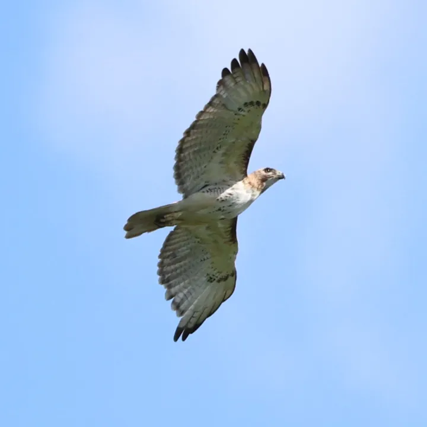
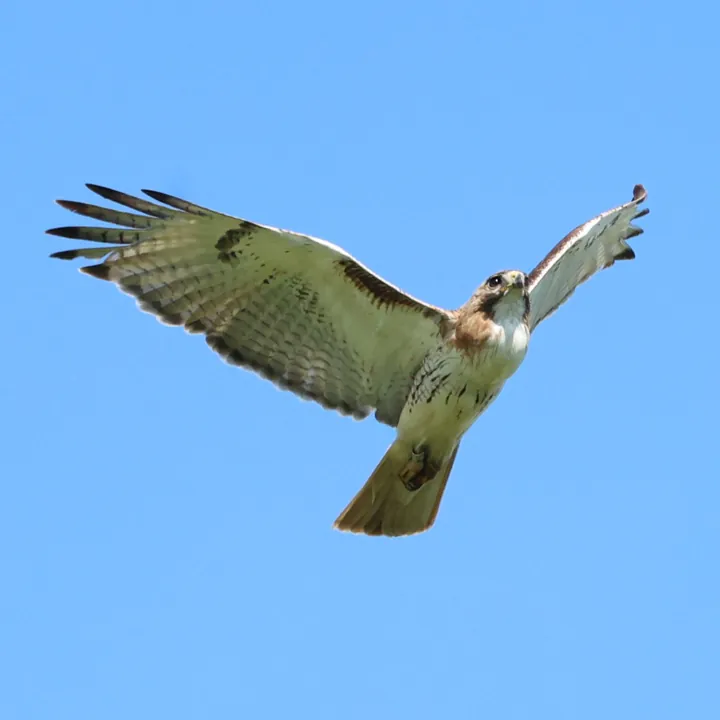
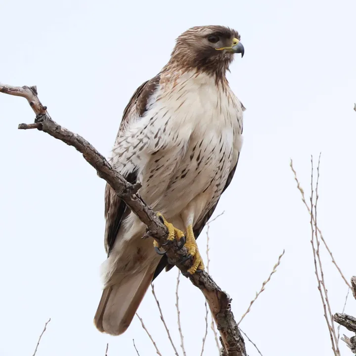
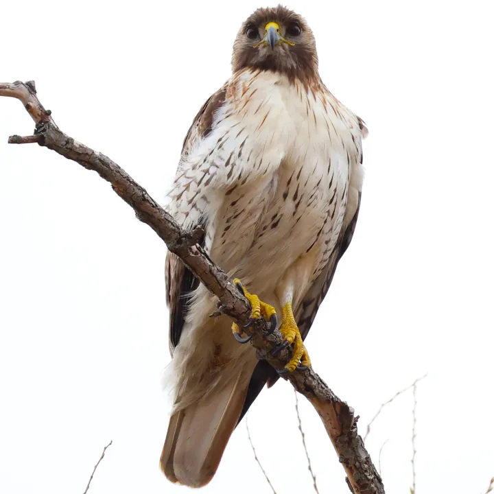
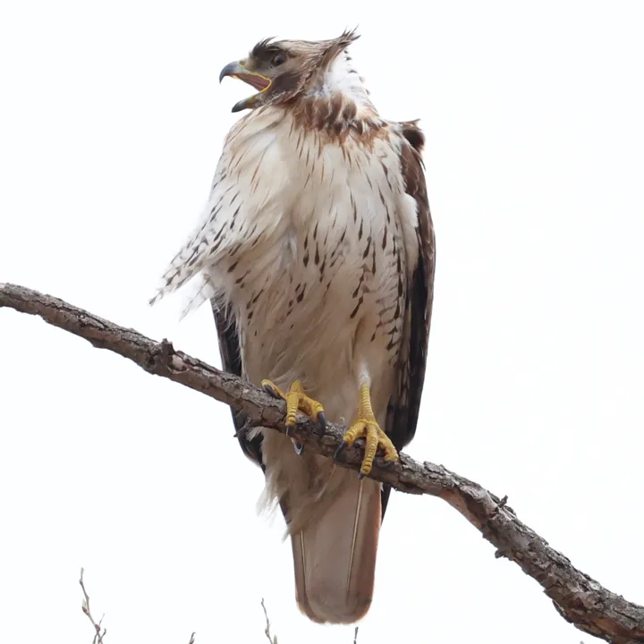
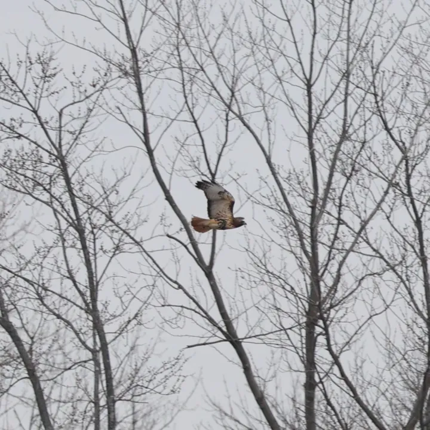
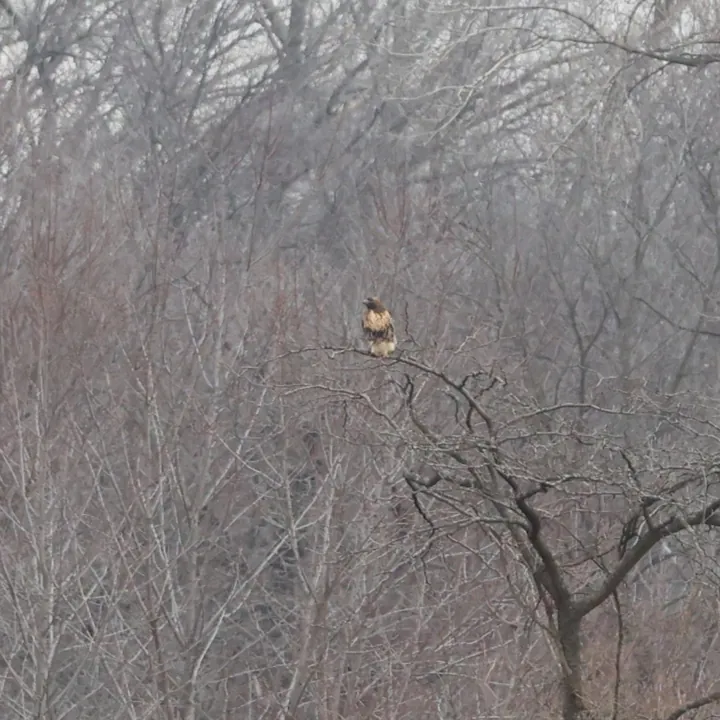
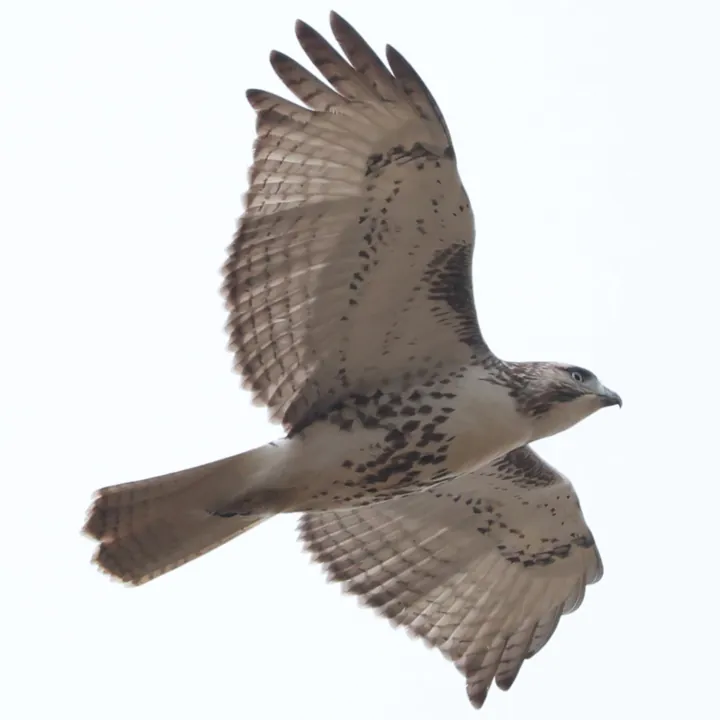
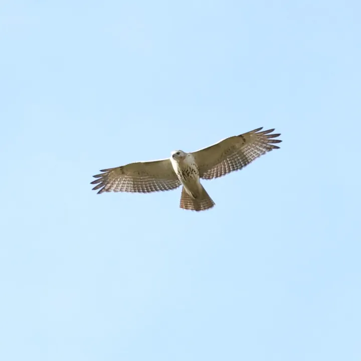
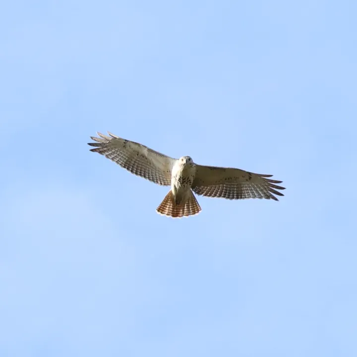
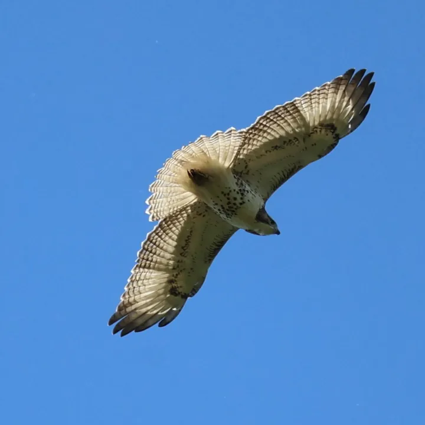
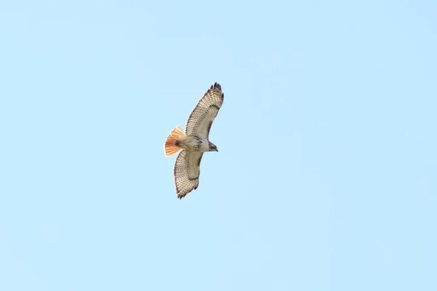